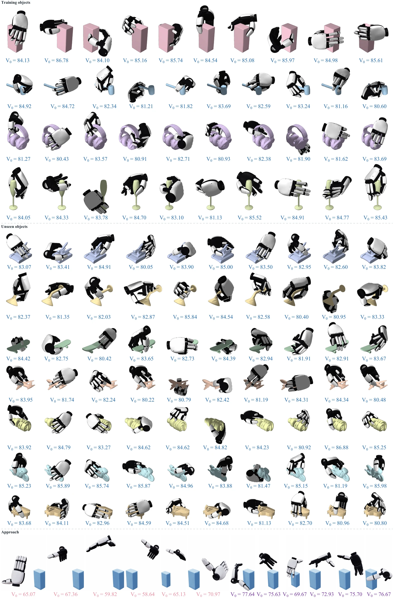
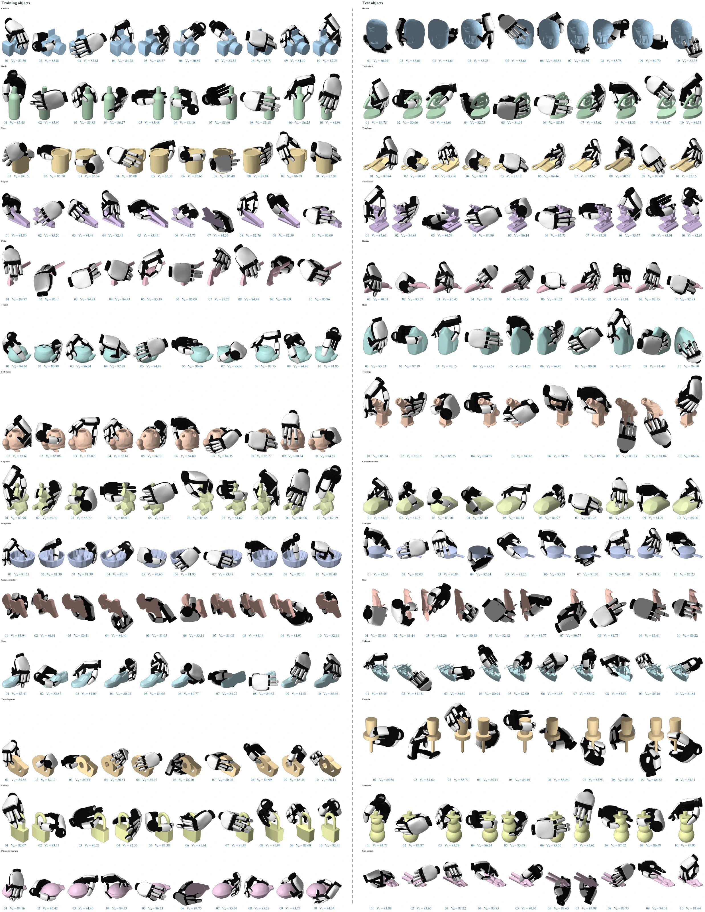

Dr. Grasp-RL.Diverse and Robust Dexterous Grasping via Reinforcement Learning
1 Tsinghua University — IEI Lab2 Georgia Institute of Technology
Many ways to grasp.
One feedback policy.
A time-reversed curriculum lets MLP-based PPO learn multiple grasping modes and recover from failed interactions.
Watch the project filmDiversity meets feedback.
PROJECT FILM · 02:38A single policy can learn many effective grasps and use feedback to adapt when an interaction goes wrong.
Dr. Grasp-RL starts reinforcement learning near diverse feasible grasps, then progressively moves initialization backward: opening the fingers, extending the approach, and varying the object's position independently. This coordinated reset curriculum exposes a simple MLP actor–critic to multiple successful behaviors using PPO and a lift-height reward.
The trained teacher is distilled with behavior cloning and DAgger into a student that uses object pose, known mesh geometry, robot feedback, and action history. No grasp-pose generator is required at execution time.
Generalize. Adjust. Regrasp.
REPORTED IN THE PAPERSuccess on our object split.
418 training objects · 5,031 test objects · 10 starts per object
Swipe tables to compare both execution settings ↔
| Policy | With robot arm | Without robot arm | ||
|---|---|---|---|---|
| Train | Test | Train | Test | |
| Teacher | 97.44 | 92.11 | 98.92 | 93.23 |
| Student | 95.74 | 88.06 | 97.82 | 91.87 |
Success requires an object center-of-mass rise of at least 18 cm, held for more than 2 s within a 20 s episode. Arm-mounted trials also count IK failures and forbidden robot collisions as failures.
Transfer across six asset sets.
Teacher and student evaluated without fine-tuning.
| Object asset set | With robot arm | Without robot arm | ||
|---|---|---|---|---|
| Teacher | Student | Teacher | Student | |
| DexGraspNet | 92.52 | 88.65 | 93.67 | 92.33 |
| Objaverse | 93.09 | 88.42 | 95.56 | 94.91 |
| YCB | 83.01 | 70.27 | 89.04 | 89.18 |
| DGA | 88.21 | 81.74 | 90.66 | 89.06 |
| EGAD | 96.18 | 94.69 | 97.67 | 97.45 |
| VisualDexterity | 96.87 | 94.67 | 98.67 | 98.87 |
Values are reported separately for each asset set and execution setting; no pooled average across overlapping source collections is implied.
19.4% of successful student grasps
take more than one attempt.
Test objects · with robot arm · overall success 88.06%
- 1st attempt80.6%
- 2nd attempt10.6%
- 3rd attempt4.3%
- 4th or later4.5%
Shares are conditioned on eventual success (paper Table 3). An attempt begins at finger–object contact and ends after 0.3 s without contact. The policy continues from the resulting state, without a scene reset.
See diverse grasps from the paperTRAINING + UNSEEN OBJECTS


CLICK EITHER FIGURE TO VIEW FULL SIZE ↗
From simulation to the lab.
24 VIDEOS · 2× BY DEFAULTStudent policy deployments on the real robot.
Choose an object, then open a recording. Every cover shows the video's final frame.
Loading real-world recordings…
Grasping unseen objects.
PAIRED VIDEO · 1× BY DEFAULTThese test objects were never seen during training. Browse 11 categories and 48 rollouts.
Cup
Loading rollouts…
Loading paired videos…
Same rollout: V uses observed time; V₀ sets the time input to zero.
Choose a dataset, category, and recording. All covers and waiting previews show the final frame; playback starts at the beginning. Recorded outcomes are preserved. These selected examples are not an aggregate success-rate evaluation.
One state.
Two time inputs.
The teacher critic estimates discounted return from the current state, assuming the teacher continues from there. Here, we evaluate it along the student’s trajectory.
Blue V uses the observed episode time. Green V₀ sets only that input to zero, retaining the same pose, contacts, action history and all other inputs. Both curves share the same axes; the horizontal axis always shows actual simulation time.
Neither curve is a success probability or the immediate reward. Values are sampled at the 10 Hz control rate; intermediate video frames retain the latest prediction. V₀ is a network prediction with a modified time input, not a newly simulated episode.
V₀(s) = V(s, 0)